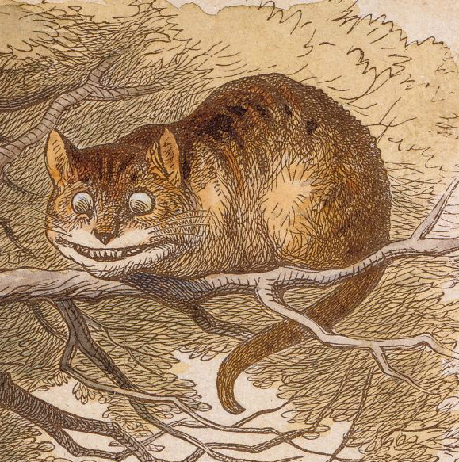

Sara Kollarova

Objectives
Highly motivated lab technician looking for new challenges.
Education
Bachelor of Science
- Masaryk University, Brno
- September 2020
Master of Science
- Masaryk University, Brno
- February 2023
Experience
Researcher
- CEITEC, MU, Brno
- July 2019- December 2021
Internship
- Synthon, Brno
- October 2021
Internship
- University of Jyvaskyla, Finland
- February 2022 - July 2022
Laboratory Technician
- Fastenal Europe, Brno
- May 2023 - present
Skills
- mechanical and dimensional testing
- good laboratory practice
- analytical thinking
- creativity
If you are interested in contacting me click here.